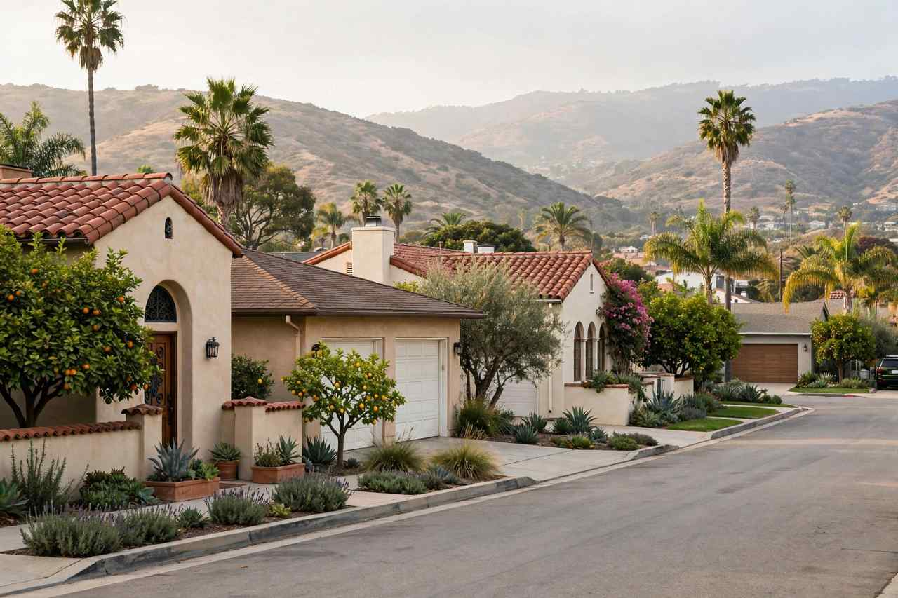

Rodent Control · Corte Madera, CA
Fast Rodent Control in Corte Madera, CA
Murvo delivers same-day rodent control in Corte Madera for rats and mice in attics, walls, kitchens, and crawl spaces. Local crews start with a thorough inspection, then remove, exclude, and monitor until the problem is solved. You approve one flat-rate price in writing before any work starts, and every job carries a written guarantee across Marin County. Crews route daily across Marin County - 2 ZIP codes covered, including 94976, 94925.
24/7Availability
2ZIP codes covered
Same-dayResponse
Licensed · Upfront options · Written guarantees · Fully insured
Corte Madera at a glance
Local Rodent Control for Corte Madera, CA.
Marin County
Countywestern California
RegionRichmond · 10 mi
Nearest metro71 mile southwest of Sacramento
From Sacramento2
ZIP codes covered Service by service in Corte Madera
Rodent Control Services Available in Corte Madera
Rodent-only specialists serving Corte Madera and Marin County. Every service below is explained in local terms - the species involved, the entry points that matter in bungalows and ranch homes, Victorians and stucco row homes, hillside homes, and suburban homes near canyons and open space, and the seasonal timing that decides whether a fix lasts.
- 01Rodent Control↗
- 02Rodent Inspection↗
- 03Rodent Removal↗
- 04Rodent Exclusion↗
- 05Rodent Proofing↗
- 06Rat Control↗
- 07Mice Control↗
- 08Mouse Removal↗
- 09Rat Removal↗
- 10Rodent Trapping↗
- 11Rodent Baiting↗
- 12Rodenticide Application↗
- 13Attic Rodent Removal↗
- 14Crawl Space Rodent Removal↗
- 15Wall Rodent Removal↗
- 16Kitchen Rodent Control↗
- 17Garage Rodent Control↗
- 18Commercial Rodent Control↗
- 19Residential Rodent Control↗
- 20Emergency Rodent Removal↗
- 21Same-Day Rodent Control↗
- 22Rodent Damage Repair↗
- 23Rodent Waste Cleanup↗
- 24Rodent Disinfection↗
- 25Rodent Odor Removal↗
- 26Dead Rodent Removal↗
- 27Rodent Dropping Cleanup↗
- 28Rodent Exclusion for Roofs↗
- 29Rodent Exclusion for Vents↗
- 30Rodent Exclusion for Chimneys↗
Rodent Control in Corte Madera
Rodent Control in Corte Madera
What does a finished job actually look like? No new droppings, no nighttime movement, and no open route back inside. That is the standard Murvo works toward in Corte Madera, with background-checked technicians, a written workmanship guarantee, and follow-up checks that confirm the quiet is real rather than temporary luck.
In Corte Madera, rodent control is not a generic spray-and-go service. Rodents exploit rooflines, eaves and attic vents, crawlspace and raised-foundation gaps, and garage door seals in bungalows and ranch homes, Victorians and stucco row homes, hillside homes, and suburban homes near canyons and open space, and a fix that ignores those routes does not last. Murvo's Corte Madera team inspects first, shows you the evidence - droppings, gnaw marks, entry gaps - and then lays out the work with a flat-rate written quote. We serve all of Marin County from Corte Madera, including Alto, Larkspur, and every job is covered by our written workmanship guarantee. Homes near Kentfield tend to show activity first in Corte Madera, which is why inspections start with rooflines, eaves and attic vents, crawlspace and raised-foundation gaps, and garage door seals.
We start by identifying whether Roof rat (Rattus rattus), House mouse (Mus musculus), or both are active, because each species nests, feeds, and travels differently. Once numbers fall, exclusion sealing closes the route back in, droppings and nesting debris are removed hygienically, and follow-up monitoring checks the attic, crawl space, and kitchen until readings stay clear. Nothing is sealed while animals remain inside. Traps are placed on proven runways along walls, beams, and pipe runs, checked on schedule, and adjusted as catches change. That order protects your home.
Getting started takes one conversation, day or night, because our lines stay open 24/7. Work proceeds only after your approval, in stages you can follow, and a final walkthrough reviews every seal and every monitoring result before sign-off. We book a window that suits your household, confirm access needs in advance, and arrive prepared. Questions after sign-off are welcome at any hour, and the same written record helps any technician pick up your case immediately.
In most of Corte Madera, we can offer a same-day appointment for rodent control, and our lines are open 24/7 for urgent cases like scratching in the walls or a rodent in a living area. Your technician inspects first, explains the plan, and quotes a flat rate in writing before any work begins, so help starts fast without surprises. Around Corte Madera, bungalows and ranch homes, Victorians and stucco row homes, hillside homes, and suburban homes near canyons and open space give rodents the most cover, which is why entry points get checked before traps are set.
The honest answer is that it depends on species, activity level, and how much sealing your home needs, which is why Murvo inspects first and then gives you a flat-rate quote in writing. For national context only, Angi's 2026 data averages rat and mouse removal and control at $396, typically $189 to $655; that is not a Murvo price, and your written quote is the figure you pay.
Rodent Inspection in Corte Madera
Rodent Inspection in Corte Madera
A proper rodent inspection in Corte Madera answers three questions: which species is active, where is it nesting, and how is it getting inside? Our licensed, insured technicians document runways, droppings, and damage with photos and plain-language notes, then separate urgent fixes from preventive ones. There is no pressure to proceed, and every recommendation is priced in writing first.
When you need rodent inspection in Corte Madera, the job starts with what is actually happening in your part of Marin County. Murvo crews work Corte Madera every week, so they know how Roof rat (Rattus rattus) and House mouse (Mus musculus) behave around bungalows and ranch homes, Victorians and stucco row homes, hillside homes, and suburban homes near canyons and open space here - and where they get in: rooflines, eaves and attic vents, crawlspace and raised-foundation gaps, and garage door seals. We arrive equipped for the full job, confirm the flat rate in writing before work begins, and cover the whole Corte Madera area, including Alto, Larkspur. No call-center runaround and no open-ended hourly billing - just a local crew, a clear plan, and a written quote you approve first. Around Kentfield, Tamalpais-Homestead Valley, Marin City, the pattern is similar: House mouse (Mus musculus) finds rooflines, eaves and attic vents, crawlspace and raised-foundation gaps, and garage door seals first, and lasting rodent inspection has to close those routes.
We listen first: when you hear noises, and where, often points straight to the most active nesting areas. The visit ends with a written report covering species, entry points, contamination, and the removal and exclusion steps we recommend, each with a flat-rate price. Technicians then trace active runways, identify whether droppings belong to Roof rat (Rattus rattus) or House mouse (Mus musculus), and check insulation and wiring for damage. That detail stops you paying for treatment aimed at the wrong species or the wrong part of the building.
To book, call any time; urgent inspections are answered 24/7. We agree a window, note where you have noticed signs, and confirm access to the attic and crawl space. On the day, your technician works through the property methodically, reviews photographs with you on site, and leaves written findings plus any quote before departing. You keep the report either way, and it remains useful for staging repairs later or comparing conditions at a future seasonal check.
You do not have to wait days for answers in Corte Madera. Same-day rodent inspection appointments are available in most areas, urgent calls are taken 24/7, and most home inspections take under an hour. You finish the visit with photos, written findings, and flat-rate pricing for anything we recommend. If you are seeing signs now, an inspection this week is the fastest way to know which situation you are in.
Your exact rodent inspection price is confirmed before we visit, and any follow-up work is quoted as a flat rate in writing after the inspection — no hourly billing. For context, Angi's 2026 data puts a professional rodent inspection nationally at $100 to $200, often credited toward the job if you proceed.
Rodent Removal in Corte Madera
Rodent Removal in Corte Madera
A removal visit should solve a health concern, not create one. Murvo technicians wear protective equipment, bag and remove contaminated material safely, and keep children and pets away from working areas. We explain each stage in plain language, confirm when rooms are safe to use again, and back the finished job with a written workmanship guarantee.
When you need rodent removal in Corte Madera, the job starts with what is actually happening in your part of Marin County. Murvo crews work Corte Madera every week, so they know how Roof rat (Rattus rattus) and House mouse (Mus musculus) behave around bungalows and ranch homes, Victorians and stucco row homes, hillside homes, and suburban homes near canyons and open space here - and where they get in: rooflines, eaves and attic vents, crawlspace and raised-foundation gaps, and garage door seals. We arrive equipped for the full job, confirm the flat rate in writing before work begins, and cover the whole Corte Madera area, including Alto, Larkspur. No call-center runaround and no open-ended hourly billing - just a local crew, a clear plan, and a written quote you approve first. In Corte Madera, rodent removal calls most often involve bungalows and ranch homes, Victorians and stucco row homes, hillside homes, and suburban homes near canyons and open space, where rooflines, eaves and attic vents, crawlspace and raised-foundation gaps, and garage door seals decide whether the fix holds.
Why trap first instead of reaching for poison? Because trapped animals can be counted, removed, and disposed of hygienically, while poisoned animals can die where nobody can reach them. Technicians therefore match traps to species and setting, work attics, voids, and kitchens in sequence, and retrieve any carcass promptly. Contaminated nesting material is bagged carefully, affected surfaces are disinfected before any cleaning, and dry sweeping of droppings is never used, since that spreads contamination into the air. The sequence ends with monitoring, because removal without a confirming check is a claim rather than a result.
Once removal is underway, expect short, predictable visits. Your technician checks each mapped trap, removes catches hygienically, resets what is still needed, and updates the record with you. When catches reach zero, monitoring confirms it, sealing is discussed, and the job closes with a walkthrough and your guarantee paperwork in hand before we leave. At close, prevention advice is tailored to what actually attracted rodents to your property, not copied from a generic checklist.
When rodents are active indoors in Corte Madera, waiting rarely helps. Rodent removal can usually start the same day you call, our line answers 24/7 for a rodent loose in a living area, and the first visit sets traps straight away. Scheduled returns then clear and reset them until monitoring shows the home is clear. In Marin County, activity follows the local season, so timing the work matters as much as the method.
Cost depends on the species, how many animals are active, and how much sealing the home needs afterwards, so Murvo inspects first and quotes one flat rate in writing. For national context only, Angi's 2026 data averages rat and mouse removal at $396, typically $189 to $655. That benchmark is not a Murvo price; your written quote is the exact figure.
Rodent Exclusion in Corte Madera
Rodent Exclusion in Corte Madera
Exclusion is also the safest long-term strategy for Corte Madera homes, because a sealed house needs far less bait and fewer repeat treatments. Murvo's licensed, insured crews finish roof, vent, and chimney work to weatherproof standards, walk every sealed opening with you afterwards, and back the result with a written workmanship guarantee you can hold us to.
Homeowners in Corte Madera call Murvo for rodent exclusion because the problem here is specific: Roof rat (Rattus rattus) pressure around bungalows and ranch homes, Victorians and stucco row homes, hillside homes, and suburban homes near canyons and open space, tight access at rooflines, eaves and attic vents, crawlspace and raised-foundation gaps, and garage door seals, and activity that follows the local season. Our Marin County crews diagnose the real source before recommending work, explain the options in plain language, and quote one flat rate in writing. Across Corte Madera - including Alto, Larkspur - every visit is backed by licensed, insured technicians and our written workmanship guarantee. Around Kentfield, Tamalpais-Homestead Valley, Marin City, the pattern is similar: House mouse (Mus musculus) finds rooflines, eaves and attic vents, crawlspace and raised-foundation gaps, and garage door seals first, and lasting rodent exclusion has to close those routes.
The sequence matters as much as the materials. Photographs record every finished seal with its location, building a reference you keep. Because a properly sealed home needs far less ongoing treatment, exclusion also lowers long-term reliance on bait. A later monitoring check tests the work honestly, revisiting each sealed point for fresh rub marks, droppings, or gnawing. Active openings are closed first, inactive weaknesses next, and purely cosmetic gaps last, so protection arrives where pressure is highest. The final monitoring visit therefore matters as much as the sealing day itself, and its findings are shared.
Before sealing day, confirm pets are secured and access to the roofline and foundation is clear. The crew then works through the agreed list, checks that no animals remain inside, and fits each seal cleanly. Afterwards you receive the photographs, the guarantee, and a date for the follow-up check that confirms everything is holding as intended. If monitoring ever finds fresh activity at a sealed point, that written inventory tells us exactly what to inspect first.
Rodent exclusion in Corte Madera usually starts with a survey visit we can often schedule the same day you call. Sealing itself is booked as soon as any active animals are cleared, because nothing is sealed inside. Most homes are fully sealed within days, not weeks, and urgent entry points near wiring or food areas are prioritized first. That is also why Murvo pairs removal with exclusion in Corte Madera - treating the animal without closing rooflines, eaves and attic vents, crawlspace and raised-foundation gaps, and garage door seals rarely lasts.
For national context, Angi's 2026 data puts basic exclusion at $200 to $600, depending on access and the number of openings. That is a benchmark, not a Murvo price. After surveying your Corte Madera home, we list every opening that needs sealing and quote one flat rate in writing, so you pay for the work your property actually needs and nothing more.
Rodent Proofing in Corte Madera
Rodent Proofing in Corte Madera
The best rodent problem is the one that never starts. Rodent proofing in Corte Madera hardens your home before Roof rat (Rattus rattus) and House mouse (Mus musculus) move in: sealing gaps, screening vents, fitting door sweeps, and removing the food and shelter that attract them. Murvo surveys the whole property, prioritizes the work, and gives one flat-rate written quote for the work.
Homeowners in Corte Madera call Murvo for rodent proofing because the problem here is specific: Roof rat (Rattus rattus) pressure around bungalows and ranch homes, Victorians and stucco row homes, hillside homes, and suburban homes near canyons and open space, tight access at rooflines, eaves and attic vents, crawlspace and raised-foundation gaps, and garage door seals, and activity that follows the local season. Our Marin County crews diagnose the real source before recommending work, explain the options in plain language, and quote one flat rate in writing. Across Corte Madera - including Alto, Larkspur - every visit is backed by licensed, insured technicians and our written workmanship guarantee. Seasonal timing matters for rodent proofing in Corte Madera: rodents surge in Corte Madera from October through February.
Proofing divides naturally into structure, surroundings, and habits. Surroundings means trimming branches back from the roofline, moving clutter and timber away from walls, and reducing sheltered harborage. Habits means securing pet food, bird seed, and stored produce so the property stops advertising itself. Structure means sealing utility entries, screening vents and chimneys, and fitting sweeps where doors leak light. Technicians assess all three layers in one survey and rank the combined findings by impact, not by what is easiest to sell.
Book a rodent proofing survey in Corte Madera and we will arrange a visit time that suits your household, often the same day. Approved sealing is completed cleanly, then a seasonal re-check is scheduled. Your technician walks the property with you, photographs weak points, and explains the plan in plain language. You receive a flat-rate written quote separating essential from optional work. The finished work is fully guaranteed in writing by Murvo.
Proofing is planned work rather than an emergency, but you can still move fast: rodent proofing surveys in Corte Madera are often available the same day and always within a few days. Once you approve the plan, most work is finished in a single visit, ideally before colder weather drives rodents indoors. Around Corte Madera, bungalows and ranch homes, Victorians and stucco row homes, hillside homes, and suburban homes near canyons and open space give rodents the most cover, which is why entry points get checked before traps are set.
We survey your Corte Madera property first, separate the quick wins you can handle yourself from the specialist sealing, and quote the professional work as one flat rate in writing so spending can be staged. Angi's 2026 national context puts exclusion, the core of proofing, at $200 to $600 for basic work — a benchmark only, not a Murvo price.
Rat Control in Corte Madera
Rat Control in Corte Madera
Rats are cautious, strong, and destructive, and a Corte Madera sighting usually means a settled group is already traveling your fences, pipes, and rooflines nightly. Murvo's rat control identifies the species, maps those routes, and combines pre-baited trapping with removal and exclusion. You approve one flat-rate written quote before work starts, and monitoring continues until activity fully stops.
In Corte Madera, rat control is not a generic spray-and-go service. Rodents exploit rooflines, eaves and attic vents, crawlspace and raised-foundation gaps, and garage door seals in bungalows and ranch homes, Victorians and stucco row homes, hillside homes, and suburban homes near canyons and open space, and a fix that ignores those routes does not last. Murvo's Corte Madera team inspects first, shows you the evidence - droppings, gnaw marks, entry gaps - and then lays out the work with a flat-rate written quote. We serve all of Marin County from Corte Madera, including Alto, Larkspur, and every job is covered by our written workmanship guarantee. The Corte Madera crews who handle rat control also handle the follow-through - proofing, cleanup, and monitoring - so one visit can close the whole problem.
Wary rats punish rushed trapping, so the program begins with patience. Only then are traps set, checked frequently, and repositioned as the pattern shifts. Catches are recorded by location, giving a clear picture of colony size and movement. Exclusion follows at rooflines and entry points, and monitoring devices remain in place afterwards to verify that quiet routes have genuinely stayed quiet. Unset traps are placed on confirmed runways and pre-baited until feeding becomes confident and regular. Counts matter here, because a falling catch trend tells a different story from a single lucky night.
Call and describe where signs are strongest; that directs the first inspection. Approval starts the program the same visit, with follow-up checks booked ahead so momentum never depends on you calling back. Your technician maps routes and harborage, explains the pre-baiting plan honestly, including why results build over days, and provides the written quote. You will know after each visit what was caught, where placements changed, and what the next check is specifically looking for.
Call day or night — urgent rat control calls in Corte Madera are answered 24/7, and a same-day inspection can usually start the program. Pre-baiting begins on that first visit once you approve the written quote, traps are set when rats are feeding confidently, and scheduled checks continue until activity stops. A Corte Madera inspection confirms it on site - dropping size, gnaw marks, and entry points tell the story quickly.
Species, colony size, and the number of entry points to seal all affect rat work, which is why Murvo inspects first and quotes one flat rate in writing. Angi's 2026 figures, given for national context only, average rat control and removal at $396 and typically run $189 to $655; the written quote for your Corte Madera home is the exact price.
Mice Control in Corte Madera
Mice Control in Corte Madera
Mice slip into bungalows and ranch homes, Victorians and stucco row homes, hillside homes, and suburban homes near canyons and open space in Corte Madera through rooflines, eaves and attic vents, crawlspace and raised-foundation gaps, and garage door seals and settle near warmth and food: behind appliances, inside attic voids, and along pipe runs. Because they investigate new objects quickly, clustered traps work fast when placed correctly. Our licensed, insured technicians also advise on food storage and scent-trail cleaning, then confirm with follow-up visits that activity has genuinely stopped.
When you need mice control in Corte Madera, the job starts with what is actually happening in your part of Marin County. Murvo crews work Corte Madera every week, so they know how Roof rat (Rattus rattus) and House mouse (Mus musculus) behave around bungalows and ranch homes, Victorians and stucco row homes, hillside homes, and suburban homes near canyons and open space here - and where they get in: rooflines, eaves and attic vents, crawlspace and raised-foundation gaps, and garage door seals. We arrive equipped for the full job, confirm the flat rate in writing before work begins, and cover the whole Corte Madera area, including Alto, Larkspur. No call-center runaround and no open-ended hourly billing - just a local crew, a clear plan, and a written quote you approve first. Homes near Kentfield tend to show activity first in Corte Madera, which is why inspections start with rooflines, eaves and attic vents, crawlspace and raised-foundation gaps, and garage door seals.
Hygiene is part of control, not an afterthought. Droppings in cabinets are never dry-swept; surfaces are disinfected first, following careful practice, so contamination is not pushed into the air, and nesting debris is bagged and removed. Technicians also review how food, pet supplies, and bird seed are stored, since an open supply restarts activity quickly. The program favors traps over bait throughout, which keeps family kitchens safer and makes every result countable and visible. Follow-up monitoring then verifies the kitchen, attic, and voids together, rather than treating each room in isolation.
After booking, we confirm your time window and any rooms where you have seen droppings or heard scratching. On arrival, your background-checked technician inspects, sets clustered traps at proven hotspots, and talks you through pet and child safety around placements. Return visits clear and reset traps, then sealing is completed and the written guarantee confirmed at the final check. You approve the plan and price before trapping starts. No surprises are added later.
Mice multiply fast, so mice control in Corte Madera is built to start fast too: a survey can often be arranged the same day you call, with traps set on that first visit once the quote is approved. Because mice investigate new objects quickly, catches usually begin soon after, and check visits follow until a final confirmation shows activity has stopped. That is also why Murvo pairs removal with exclusion in Corte Madera - treating the animal without closing rooflines, eaves and attic vents, crawlspace and raised-foundation gaps, and garage door seals rarely lasts.
The number of rooms affected and the amount of sealing required set the price, so Murvo surveys first and quotes one flat rate in writing. For national context only, Angi's 2026 data averages rat and mouse control and removal at $396, typically $189 to $655 — not a Murvo price; your written quote is exact.
Mouse Removal in Corte Madera
Mouse Removal in Corte Madera
Most Corte Madera removal jobs begin in one room and end with evidence in three, because mice nest close to food and travel widely at night. Murvo surveys room by room, runs traps at every active site, and seals behind the work. The full program is one flat-rate written quote.
In Corte Madera, mouse removal is not a generic spray-and-go service. Rodents exploit rooflines, eaves and attic vents, crawlspace and raised-foundation gaps, and garage door seals in bungalows and ranch homes, Victorians and stucco row homes, hillside homes, and suburban homes near canyons and open space, and a fix that ignores those routes does not last. Murvo's Corte Madera team inspects first, shows you the evidence - droppings, gnaw marks, entry gaps - and then lays out the work with a flat-rate written quote. We serve all of Marin County from Corte Madera, including Alto, Larkspur, and every job is covered by our written workmanship guarantee. The Corte Madera crews who handle mouse removal also handle the follow-through - proofing, cleanup, and monitoring - so one visit can close the whole problem.
The survey comes first, and it is deliberately thorough. Lofts, under-floor voids, cabinets, and the spaces behind kitchen units are checked for nests, droppings, and stored food caches. Traps are then set in multiples at proven points, because a single trap rarely reflects colony size. Returns are scheduled tightly: catches are cleared, traps reset, and numbers tracked until they fall to zero and stay there across a confirming check before sealing begins. Photographs of nesting sites help here, because they reveal how far activity had spread before trapping began.
Booking takes one call. We agree a time window, and your background-checked technician arrives ready to survey attics, cabinets, and voids in one visit. Work begins only after you approve the written quote, and trap checks are booked ahead so nothing drifts. At sign-off we review catch records together, confirm sealing is complete, and leave you with guarantee paperwork and prevention advice. Rooms are confirmed fully safe to use again.
In Corte Madera, mouse removal can often begin the same day you call, especially where mice are active in kitchens or living areas. The first visit surveys nesting sites and sets traps immediately after you approve the quote; because mice investigate traps quickly, catches usually start fast, and return visits continue until numbers reach zero. In Marin County, most cases involve the Roof rat (Rattus rattus) and the House mouse (Mus musculus), so the inspection focuses on their routes first.
Rooms involved and sealing needed determine the cost of removal, so we survey first and agree a flat rate in writing before work begins. As national context only, Angi's 2026 data averages rat and mouse removal at $396, with a typical range of $189 to $655; that benchmark is not a Murvo price, and your written quote covers your exact program.
Rat Removal in Corte Madera
Rat Removal in Corte Madera
A hurried rat removal that misses breeding females or a hidden nest simply restarts the cycle. Murvo's rat removal in Corte Madera starts with a species and colony-size assessment, uses pre-baited traps on confirmed runways, and removes animals hygienically across repeat visits. A flat-rate written quote is agreed before trapping starts.
In Corte Madera, rat removal is not a generic spray-and-go service. Rodents exploit rooflines, eaves and attic vents, crawlspace and raised-foundation gaps, and garage door seals in bungalows and ranch homes, Victorians and stucco row homes, hillside homes, and suburban homes near canyons and open space, and a fix that ignores those routes does not last. Murvo's Corte Madera team inspects first, shows you the evidence - droppings, gnaw marks, entry gaps - and then lays out the work with a flat-rate written quote. We serve all of Marin County from Corte Madera, including Alto, Larkspur, and every job is covered by our written workmanship guarantee. Around Kentfield, Tamalpais-Homestead Valley, Marin City, the pattern is similar: House mouse (Mus musculus) finds rooflines, eaves and attic vents, crawlspace and raised-foundation gaps, and garage door seals first, and lasting rat removal has to close those routes.
Removal stays trap-led and exclusion-backed throughout. Locked bait stations appear only where a site genuinely justifies them, positioned away from pets and food, labeled, and monitored on schedule; loose bait is never used. After clearance, contaminated areas are sanitized carefully, with surfaces disinfected before cleaning and droppings never dry-swept. Monitoring devices and a documented final walkthrough then prove activity has ended, and proofing advice covers drains, vents, and rooflines going forward. That written evidence stays with you, including the monitoring readings that supported the decision to sign off.
Book and we will agree a visit time, with same-day appointments for active infestations where available. Repeat visits are scheduled in advance, progress is reported after each one, and sealing follows once catches stop and monitoring stays clear. Your technician assesses the colony, explains each stage, and confirms the written quote before pre-baiting begins. Every visit is documented with counts and locations, so the final clearance rests on a complete record rather than a single quiet check.
In Corte Madera, rat removal can usually start the same day you call, with 24/7 answering for rats active in living areas. Pre-baiting begins on the first visit after you approve the written quote, and traps are set once rats feed confidently, typically within days. Repeat visits then run frequently until monitoring confirms the colony is gone. The written quote for your Corte Madera property will spell out exactly which of these applies before any work starts.
Colony size, access, and the sealing needed afterwards drive the price, so Murvo assesses the property first and quotes a flat rate in writing covering the full program. Angi's 2026 data, for national context only, averages rat removal at $396 and typically ranges from $189 to $655; that is a benchmark, not a Murvo price.
Rodent Trapping in Corte Madera
Rodent Trapping in Corte Madera
In bungalows and ranch homes, Victorians and stucco row homes, hillside homes, and suburban homes near canyons and open space, species behavior drives every choice. Wary Roof rats (Rattus rattus) need days of pre-baiting before unset traps can be armed, while House mice (Mus musculus) investigate clustered traps quickly near rooflines, eaves and attic vents, crawlspace and raised-foundation gaps, and garage door seals routes across Marin County. Our technicians match device, bait, and position to that behavior instead of relying on a single generic setup.
In Corte Madera, rodent trapping is not a generic spray-and-go service. Rodents exploit rooflines, eaves and attic vents, crawlspace and raised-foundation gaps, and garage door seals in bungalows and ranch homes, Victorians and stucco row homes, hillside homes, and suburban homes near canyons and open space, and a fix that ignores those routes does not last. Murvo's Corte Madera team inspects first, shows you the evidence - droppings, gnaw marks, entry gaps - and then lays out the work with a flat-rate written quote. We serve all of Marin County from Corte Madera, including Alto, Larkspur, and every job is covered by our written workmanship guarantee. Homes near Kentfield tend to show activity first in Corte Madera, which is why inspections start with rooflines, eaves and attic vents, crawlspace and raised-foundation gaps, and garage door seals.
Trap selection covers snap traps for quick, humane dispatch, multi-catch devices for busy mouse routes, and live-capture options where you prefer release away from the home. As catches fall, we recommend exclusion sealing, plus droppings cleanup for affected areas, moving the program from active trapping to monitoring and final sign-off. Baits and lures are matched to species and location, and all devices are positioned with pet and child safety in mind and explained to your household. Every device location is mapped for you.
Book rodent trapping in Corte Madera and a technician can often start the same day. The first visit inspects, maps activity, and places or pre-baits traps; you approve a flat-rate written quote covering the program including check visits before we proceed. Scheduled returns clear and reset traps and share catch records with you. When numbers reach zero, we confirm monitoring is clear and discuss sealing. The finished program is guaranteed in writing.
In Corte Madera, a rodent trapping program can usually start the same day you call, with traps placed or pre-baiting begun on the first visit after you approve the quote. Mice often investigate within the first night, while wary rats need a few days of pre-baiting before traps are set. Scheduled checks then keep the program moving until numbers reach zero. Murvo's Corte Madera crews explain the finding either way, and the flat-rate quote leaves the decision with you.
Rather than charging by the trap or by the visit, Murvo inspects first and quotes rodent trapping as one flat rate in writing for the complete program, including its check visits. Price depends on species, activity level, and how many checks are needed, and there is no hourly billing at any stage, so there are no per-visit surprises.
Rodent Baiting in Corte Madera
Rodent Baiting in Corte Madera
Most Corte Madera baiting requests start with returning droppings outdoors, around garages, sheds, or fence lines. Murvo answers carefully: activity is mapped first, trapping and exclusion come first, and any stations used are locked and tamper-resistant. One flat-rate written quote covers placement, monitoring, and eventual removal of every station.
When you need rodent baiting in Corte Madera, the job starts with what is actually happening in your part of Marin County. Murvo crews work Corte Madera every week, so they know how Roof rat (Rattus rattus) and House mouse (Mus musculus) behave around bungalows and ranch homes, Victorians and stucco row homes, hillside homes, and suburban homes near canyons and open space here - and where they get in: rooflines, eaves and attic vents, crawlspace and raised-foundation gaps, and garage door seals. We arrive equipped for the full job, confirm the flat rate in writing before work begins, and cover the whole Corte Madera area, including Alto, Larkspur. No call-center runaround and no open-ended hourly billing - just a local crew, a clear plan, and a written quote you approve first. The Corte Madera crews who handle rodent baiting also handle the follow-through - proofing, cleanup, and monitoring - so one visit can close the whole problem.
Baiting follows Inspect, Remove, Exclude, Clean, and Monitor, and it never stands alone. After a full inspection maps activity, background-checked technicians choose station locations along runways, fence lines, and entry points, away from pet play areas and food storage. Every station is tamper-resistant, locked, labeled, and anchored, with placement photographed for your records. We return on schedule to check consumption, record amounts, and adjust positions, and stations are removed when activity ends rather than left indefinitely. Loose bait is never used anywhere.
After booking, we confirm a time window and talk through where pets play and children gather, so placement planning starts before we arrive. On the day, your background-checked technician inspects first, agrees each station location with you, and secures and labels every unit. Follow-up checks are booked ahead, consumption is reported to you, and the program ends with stations removed and sealing recommendations confirmed. Nothing is placed anywhere you have not approved.
In Corte Madera, rodent baiting starts with an inspection visit we can often arrange the same day you call. Stations are only placed after activity is mapped and you approve the written quote and each location, so setup is deliberate rather than rushed. Monitoring visits then run on a fixed schedule until consumption stops and activity is confirmed clear. The written quote for your Corte Madera property will spell out exactly which of these applies before any work starts.
Baiting cost depends on how many locked stations your property needs and how long monitoring runs, so Murvo inspects and maps activity first, then quotes one flat rate in writing covering placement and scheduled checks. There are no per-visit surprises, and because our approach is exclusion-first, the goal is always to reduce and eventually remove stations, not maintain them forever.
Rodenticide Application in Corte Madera
Rodenticide Application in Corte Madera
Regulation shapes product choice in California: California restricts anticoagulant rodenticides, other states impose their own limits, and Murvo complies with every applicable rule. You receive copies of product labels and safety information for anything applied at your Corte Madera property, and we talk through children, pets, livestock, and wildlife concerns before any flat-rate written quote is agreed.
When you need rodenticide application in Corte Madera, the job starts with what is actually happening in your part of Marin County. Murvo crews work Corte Madera every week, so they know how Roof rat (Rattus rattus) and House mouse (Mus musculus) behave around bungalows and ranch homes, Victorians and stucco row homes, hillside homes, and suburban homes near canyons and open space here - and where they get in: rooflines, eaves and attic vents, crawlspace and raised-foundation gaps, and garage door seals. We arrive equipped for the full job, confirm the flat rate in writing before work begins, and cover the whole Corte Madera area, including Alto, Larkspur. No call-center runaround and no open-ended hourly billing - just a local crew, a clear plan, and a written quote you approve first. Homes near Kentfield tend to show activity first in Corte Madera, which is why inspections start with rooflines, eaves and attic vents, crawlspace and raised-foundation gaps, and garage door seals.
Monitoring data guides the whole treatment: whether it continues, changes product, or stops entirely in favor of proofing alone. Dead rodents are retrieved promptly where accessible, stations are kept away from pet and child areas, and every product used is documented with its label and safety information, so nothing applied at your property is ever hidden from you. We prioritize sealing entry points with exclusion and physical removal so dependence on chemical control shrinks visit by visit. State restrictions are checked before product selection.
Booking rodenticide application in Corte Madera starts with an inspection visit, often available the same day. Your licensed technician confirms whether treatment is justified, explains safer alternatives first, and gives you a flat-rate written quote before anything is applied. If you proceed, stations are installed locked and labeled, monitoring visits are scheduled, and treatment continues only while monitoring data supports it, under our written workmanship guarantee. You can stop the program at any point.
No responsible rodenticide application starts without an inspection, and in Corte Madera that inspection can often be scheduled the same day you call. If treatment is justified and you approve the written quote, locked stations are installed on that visit. Monitoring then runs on schedule, and treatment stops as soon as the data shows activity has ended. Murvo's Corte Madera crews explain the finding either way, and the flat-rate quote leaves the decision with you.
Application cost depends on the number of locked stations, the product required under California rules, and how long monitoring runs. Murvo inspects first, explains whether trapping or exclusion could avoid chemical control entirely, and then quotes one flat rate in writing before work begins. The quote covers scheduled monitoring visits, so there are no per-visit surprises later.
Attic Rodent Removal in Corte Madera
Attic Rodent Removal in Corte Madera
Attics offer rodents warmth, quiet nesting material, and insulation to contaminate, and in bungalows and ranch homes, Victorians and stucco row homes, hillside homes, and suburban homes near canyons and open space across Corte Madera they are reached through rooflines, eaves and attic vents, crawlspace and raised-foundation gaps, and garage door seals long before anyone notices. Our technicians photograph what they find inside, check for young, nests, and secondary entry points in adjoining crawl spaces, and clear the space before arranging cleanup and disinfection where contamination is present.
When you need attic rodent removal in Corte Madera, the job starts with what is actually happening in your part of Marin County. Murvo crews work Corte Madera every week, so they know how Roof rat (Rattus rattus) and House mouse (Mus musculus) behave around bungalows and ranch homes, Victorians and stucco row homes, hillside homes, and suburban homes near canyons and open space here - and where they get in: rooflines, eaves and attic vents, crawlspace and raised-foundation gaps, and garage door seals. We arrive equipped for the full job, confirm the flat rate in writing before work begins, and cover the whole Corte Madera area, including Alto, Larkspur. No call-center runaround and no open-ended hourly billing - just a local crew, a clear plan, and a written quote you approve first. In Corte Madera, attic rodent removal calls most often involve bungalows and ranch homes, Victorians and stucco row homes, hillside homes, and suburban homes near canyons and open space, where rooflines, eaves and attic vents, crawlspace and raised-foundation gaps, and garage door seals decide whether the fix holds.
Attic work follows Inspect, Remove, Exclude, Clean, and Monitor. Once clear, roofline entry points are sealed with metal mesh and flashing as part of wider proofing, and dropping cleanup and disinfection are arranged where insulation is contaminated. A detailed inspection covers the attic, roof, and eaves, identifying species, nests, droppings, and gnawed cables. Targeted, humane trapping is then set in the attic to clear active animals quickly, with checks on schedule. Monitoring traps stay briefly after sealing to confirm the attic is empty and quiet.
After booking, we confirm safe attic access and any pets or stored items to work around. On arrival, your background-checked technician inspects, explains the plan in plain language, and starts trapping once you approve the written quote. Follow-up visits are booked ahead to clear traps and complete sealing. A final monitoring check and walkthrough confirm the result before we close the job. Insulation and wiring findings are reported to you too.
In Corte Madera, attic rodent removal visits are often available the same day, and we prioritize attics where chewed wiring creates a fire risk. Trapping starts on the first visit after you approve the written quote, checks run on schedule, and most attics are cleared and sealed within days, with monitoring left briefly to confirm nothing remains inside. In Marin County, most cases involve the Roof rat (Rattus rattus) and the House mouse (Mus musculus), so the inspection focuses on their routes first.
Attic costs depend on how many animals are active, how much sealing the roofline needs, and whether contaminated insulation requires cleanup, so Murvo inspects first and quotes one flat rate in writing. That quote covers the removal program described, with cleanup options priced separately in writing before you decide, so there are no surprises once work is underway.
Crawl Space Rodent Removal in Corte Madera
Crawl Space Rodent Removal in Corte Madera
Most Corte Madera crawl-space problems surface indirectly: a smell through the floorboards, a torn vapor barrier, droppings found during unrelated repairs. Murvo inspects beneath the home, traps active animals there, and seals vents and foundation gaps. One flat-rate written quote is agreed before trapping starts below.
When you need crawl space rodent removal in Corte Madera, the job starts with what is actually happening in your part of Marin County. Murvo crews work Corte Madera every week, so they know how Roof rat (Rattus rattus) and House mouse (Mus musculus) behave around bungalows and ranch homes, Victorians and stucco row homes, hillside homes, and suburban homes near canyons and open space here - and where they get in: rooflines, eaves and attic vents, crawlspace and raised-foundation gaps, and garage door seals. We arrive equipped for the full job, confirm the flat rate in writing before work begins, and cover the whole Corte Madera area, including Alto, Larkspur. No call-center runaround and no open-ended hourly billing - just a local crew, a clear plan, and a written quote you approve first. Seasonal timing matters for crawl space rodent removal in Corte Madera: rodents surge in Corte Madera from October through February.
Cleanup below a home follows CDC guidance: droppings and nesting debris are never dry-swept, because disturbing them can spread contamination; surfaces are disinfected first, then waste is bagged and removed by technicians in protective equipment. Photographs of finished sealing are supplied with your guarantee paperwork, and access panels are refitted securely after every visit. We also trace connections upward through wall voids, since treating the crawl space alone misses rodents traveling to the attic. Moisture problems found are reported with practical recommendations.
Schedule an under-home inspection, usually within days and sooner when odors reach living areas. Your technician photographs conditions below, explains findings in plain language, and confirms the written quote before any trapping. Clearance, vent screening, and cleanup then follow in sequence, with monitoring left in place until the space below is confirmed quiet. Photographs from below the home accompany the final paperwork, which is especially useful because few homeowners ever see that space themselves.
In Corte Madera, crawl space rodent removal inspections can usually be arranged within a few days, and sooner where odors are drifting into living areas or activity sounds heavy. Trapping starts on the first visit after you approve the written quote, and clearance plus sealing follow in sequence, with monitoring left in place until the space below is confirmed quiet. In Marin County, activity follows the local season, so timing the work matters as much as the method.
Access, the number of vents and gaps to seal, and whether waste cleanup is required all shape crawl-space pricing, so Murvo inspects first and quotes one flat rate in writing. Cleanup options are priced in writing before you decide whether to include them, and there are no surprise charges for extra vents within the agreed scope.
Wall Rodent Removal in Corte Madera
Wall Rodent Removal in Corte Madera
Scratching inside a wall in Corte Madera is maddening precisely because you cannot see what is causing it. Murvo's wall rodent removal locates activity using listening, thermal clues, and entry tracing, then places trapping at void access points to draw animals out without unnecessary demolition. A flat-rate written quote comes first, and access cuts are only made when truly needed.
Homeowners in Corte Madera call Murvo for wall rodent removal because the problem here is specific: Roof rat (Rattus rattus) pressure around bungalows and ranch homes, Victorians and stucco row homes, hillside homes, and suburban homes near canyons and open space, tight access at rooflines, eaves and attic vents, crawlspace and raised-foundation gaps, and garage door seals, and activity that follows the local season. Our Marin County crews diagnose the real source before recommending work, explain the options in plain language, and quote one flat rate in writing. Across Corte Madera - including Alto, Larkspur - every visit is backed by licensed, insured technicians and our written workmanship guarantee. In Corte Madera, wall rodent removal calls most often involve bungalows and ranch homes, Victorians and stucco row homes, hillside homes, and suburban homes near canyons and open space, where rooflines, eaves and attic vents, crawlspace and raised-foundation gaps, and garage door seals decide whether the fix holds.
Once the void is clear, we apply proofing to wall entry routes, sealing baseboard and pipe gaps linked to kitchen activity so the route cannot reopen. If a rodent has died in the wall, retrieval is followed by sanitation: contaminated material is never dry-swept, surfaces are disinfected first following CDC guidance, and odor treatment is applied so other rodents are not attracted back. Monitoring at key access points then confirms the void stays quiet. Connected voids are checked before we finish.
Between visits, note the times and rooms where sounds continue, since that pattern guides adjustments. Your background-checked technician clears traps, checks connected voids, and runs quiet checks at varied times of day. Sign-off happens only when monitoring confirms silence, sealing and sanitation are complete, and your guarantee paperwork is confirmed in writing. Silence is checked more than once before sign-off, because a single quiet evening can mislead when an animal simply moves elsewhere.
Persistent wall scratching in Corte Madera often qualifies for a same-day locating visit, especially when it is keeping you awake. On that first visit, once you approve the written quote, traps are set at void access points; because rodents travel the void nightly, results usually follow within days. Quiet-wall checks confirm the silence before we sign off. If you are seeing signs now, an inspection this week is the fastest way to know which situation you are in.
Wall work pricing depends on how precisely activity can be located and whether a minimal access cut is needed, which is why Murvo locates the activity first and quotes a flat rate in writing. That way wall access work never becomes an open-ended bill, and the quote covers the trapping, sealing, and monitoring described in your plan.
Kitchen Rodent Control in Corte Madera
Kitchen Rodent Control in Corte Madera
Kitchens in bungalows and ranch homes, Victorians and stucco row homes, hillside homes, and suburban homes near canyons and open space offer rodents food, water and warmth behind fridges, ovens and sinks. Murvo's kitchen rodent control in Corte Madera starts behind those appliances, removes the animals without loose poison near food, and leaves simple hygiene notes covering bins, pet bowls and rarely moved appliances. Background-checked technicians carry out every visit.
When you need kitchen rodent control in Corte Madera, the job starts with what is actually happening in your part of Marin County. Murvo crews work Corte Madera every week, so they know how Roof rat (Rattus rattus) and House mouse (Mus musculus) behave around bungalows and ranch homes, Victorians and stucco row homes, hillside homes, and suburban homes near canyons and open space here - and where they get in: rooflines, eaves and attic vents, crawlspace and raised-foundation gaps, and garage door seals. We arrive equipped for the full job, confirm the flat rate in writing before work begins, and cover the whole Corte Madera area, including Alto, Larkspur. No call-center runaround and no open-ended hourly billing - just a local crew, a clear plan, and a written quote you approve first. Seasonal timing matters for kitchen rodent control in Corte Madera: rodents surge in Corte Madera from October through February.
In tricky cases we use nighttime trail cameras to pinpoint exactly which gap a cautious mouse is traveling through. That combination, rather than a single treatment, is what keeps kitchens in Corte Madera rodent-free. The process combines targeted trapping, sealing of pipe, cabinet and kickboard gaps, disinfection guidance for contaminated food areas, and follow-up monitoring visits. Everything follows integrated pest management: remove the animals, block the routes, take away the food and water drawing them in. The same careful standard applies on every single visit.
Booking takes one call. We return to check traps and monitoring points, adjust placement if needed, and confirm the kitchen is clear. Every stage is covered by our written workmanship guarantee. Your technician arrives as arranged, confirms where rodents are feeding and traveling, and talks you through a clear plan with one written flat-rate price. Traps are set discreetly, entry gaps sealed and food areas cleaned down. Nothing starts until you have approved the written quote.
Our phone lines are open 24/7, and kitchen cases involving droppings near food preparation areas are treated as a priority. In many Corte Madera cases we can arrange a same-day visit, subject to technician availability. Call, describe what you have found, and we will offer the earliest appointment we can. In Marin County, most cases involve the Roof rat (Rattus rattus) and the House mouse (Mus musculus), so the inspection focuses on their routes first.
Cost depends on how many rodents are active, where they are entering, and how much sealing and cleanup the kitchen needs. Murvo inspects first, then gives one flat-rate written quote covering trapping, sealing and follow-up monitoring, with no hourly billing or add-on surprises. You approve the full price before any work begins, and the quote is backed by our written workmanship guarantee.
Garage Rodent Control in Corte Madera
Garage Rodent Control in Corte Madera
Scratched boxes, droppings along garage walls or a nest in stored clutter are early warnings worth acting on. Murvo inspects the whole garage in Corte Madera, removes the animals, and proof the space properly. Every job starts with a flat-rate written quote, agreed before any work begins.
Homeowners in Corte Madera call Murvo for garage rodent control because the problem here is specific: Roof rat (Rattus rattus) pressure around bungalows and ranch homes, Victorians and stucco row homes, hillside homes, and suburban homes near canyons and open space, tight access at rooflines, eaves and attic vents, crawlspace and raised-foundation gaps, and garage door seals, and activity that follows the local season. Our Marin County crews diagnose the real source before recommending work, explain the options in plain language, and quote one flat rate in writing. Across Corte Madera - including Alto, Larkspur - every visit is backed by licensed, insured technicians and our written workmanship guarantee. Seasonal timing matters for garage rodent control in Corte Madera: rodents surge in Corte Madera from October through February.
We start by reading the evidence: droppings along edges, shredded cardboard, grease marks and entry gaps at rooflines, eaves and attic vents, crawlspace and raised-foundation gaps, and garage door seals. Trapping is placed along walls and behind storage where rodents travel, checked and adjusted on follow-up visits. Next comes proofing: door seals, vents and utility penetrations sealed, damaged materials removed, and attractants such as open pet food addressed. Because garages feed activity into the rest of the home, adjoining rooms are checked too, so the problem is solved rather than displaced. Your technician explains each stage as the work progresses.
One conversation sets the appointment and any access needs. Once you say yes, removal and proofing get underway, with contaminated nesting handled carefully. Later, we come back to read the monitors, tighten any weak spots, and confirm the space is clear. Your technician arrives, inspects from the door seal to the rear wall, and explains a plan with one written price. You keep a simple record of what was sealed and where to check in future.
We answer calls 24/7 and treat garages with active nesting, chewed wiring or rodents moving into the house as urgent. Same-day appointments in Corte Madera are often available, depending on technician schedules. Call with a description of the signs you have seen and we will offer you the earliest visit we can. The written quote for your Corte Madera property will spell out exactly which of these applies before any work starts.
Pricing depends on garage size, how established the infestation is, and how much proofing the doors and walls need. Murvo inspects first and quotes one flat rate in writing, covering trapping, nest removal, sealing and monitoring, with no hourly charges. Nothing starts until you approve that price, and the completed work is backed by our written workmanship guarantee.
Commercial Rodent Control in Corte Madera
Commercial Rodent Control in Corte Madera
Rodents threaten more than stock: they threaten licences, ratings and reputation. Murvo builds commercial programs for Corte Madera businesses around inspection, removal, exclusion and monitoring, scheduled discreetly around trading hours. You receive a flat-rate written quote for initial work and clear scheduled-service pricing afterwards. Call Murvo today for straightforward help.
Homeowners in Corte Madera call Murvo for commercial rodent control because the problem here is specific: Roof rat (Rattus rattus) pressure around bungalows and ranch homes, Victorians and stucco row homes, hillside homes, and suburban homes near canyons and open space, tight access at rooflines, eaves and attic vents, crawlspace and raised-foundation gaps, and garage door seals, and activity that follows the local season. Our Marin County crews diagnose the real source before recommending work, explain the options in plain language, and quote one flat rate in writing. Across Corte Madera - including Alto, Larkspur - every visit is backed by licensed, insured technicians and our written workmanship guarantee. Homes near Kentfield tend to show activity first in Corte Madera, which is why inspections start with rooflines, eaves and attic vents, crawlspace and raised-foundation gaps, and garage door seals.
A site-wide inspection covers kitchens, loading docks, bin areas, storage, staff areas and roof voids, identifying species, pressure points and compliance risks. Written service reports and trend reporting follow every visit, showing activity falling over time, exactly what health inspectors and food-safety auditors want documented. We deploy monitored trapping and, outdoors only, locked stations where appropriate, with full product records and no loose rodenticide near food. Exclusion seals dock doors, vents and service penetrations. Nothing is left to guesswork at any stage.
Booking starts with a site survey, not a sales pitch. Technicians then carry out removal and exclusion work around your hours, keeping customers unaware of any disruption. Each visit ends with a written service report. Regular reviews check trend data together, and our written workmanship guarantee covers the exclusion work we install. We inspect, document the risks, and quote in writing, so you know exactly what the program covers. Nothing starts until you have approved the written quote.
Our commercial lines are open 24/7, and live sightings during trading hours are treated as emergencies and handled discreetly. Response in Corte Madera depends on technician availability, but we will always offer the earliest visit we can and advise on immediate steps to protect stock, customers and your audit position. In Marin County, most cases involve the Roof rat (Rattus rattus) and the House mouse (Mus musculus), so the inspection focuses on their routes first.
For wider context, Angi's 2026 figures put rat extermination at $189-$655, averaging $396 nationally, though commercial sites are scoped individually and those figures are not Murvo prices. Site size, sector, activity and the exclusion and monitoring required all shape the cost. Murvo surveys first, then quotes a flat rate in writing for initial work or a clear scheduled-service price for an ongoing program, with reports included for your audit file.
Residential Rodent Control in Corte Madera
Residential Rodent Control in Corte Madera
Homes in bungalows and ranch homes, Victorians and stucco row homes, hillside homes, and suburban homes near canyons and open space give rodents warmth, food and quiet nesting space. Our residential rodent control in Corte Madera starts with a thorough inspection, uses pet-conscious methods with no loose poison indoors, and backs the finished work with a written workmanship guarantee from licensed, insured technicians. Help is available around the clock, every day.
In Corte Madera, residential rodent control is not a generic spray-and-go service. Rodents exploit rooflines, eaves and attic vents, crawlspace and raised-foundation gaps, and garage door seals in bungalows and ranch homes, Victorians and stucco row homes, hillside homes, and suburban homes near canyons and open space, and a fix that ignores those routes does not last. Murvo's Corte Madera team inspects first, shows you the evidence - droppings, gnaw marks, entry gaps - and then lays out the work with a flat-rate written quote. We serve all of Marin County from Corte Madera, including Alto, Larkspur, and every job is covered by our written workmanship guarantee. In Corte Madera, residential rodent control calls most often involve bungalows and ranch homes, Victorians and stucco row homes, hillside homes, and suburban homes near canyons and open space, where rooflines, eaves and attic vents, crawlspace and raised-foundation gaps, and garage door seals decide whether the fix holds.
Every home visit follows Inspect, Remove, Exclude, Clean and Monitor. Exclusion seals the gaps found, cleanup disinfects contaminated areas, and monitoring visits confirm activity has ended rather than simply moved elsewhere in the house. Inspection covers attics, crawl spaces, garages, kitchens and the exterior, reading droppings, gnaw marks and rub marks to identify species and entry points such as rooflines, eaves and attic vents, crawlspace and raised-foundation gaps, and garage door seals. Removal uses targeted trapping placed safely away from children and pets. Materials are chosen for durability, not the cheapest quick fix.
Book a visit and tell us about pets, children and where signs appeared. After approval, removal, sealing and cleaning proceed in a sensible sequence. We return for scheduled checks, share what each check shows, and finish only when monitoring confirms the home is clear. Your technician inspects the property, talks through what was found without jargon, and quotes the complete plan in writing. Prevention notes tailored to your layout are left with you at the end.
We are available 24/7 by phone, and homes with rodents in living areas, kitchens or children's bedrooms are prioritized. Same-day visits in Corte Madera are often possible, subject to technician availability. Tell us what you have seen or heard, and we will offer the earliest appointment available and advise what to do meanwhile. If you are seeing signs now, an inspection this week is the fastest way to know which situation you are in.
Nationally, Angi's 2026 figures show rat extermination at $189-$655, averaging $396, but those are not Murvo prices for your home. Species, how established activity is, and the exclusion and cleanup needed determine the actual scope. Murvo inspects first and then gives one flat-rate written quote covering removal, sealing, cleaning and monitoring, with no hourly charges, for your approval before work begins.
Emergency Rodent Removal in Corte Madera
Emergency Rodent Removal in Corte Madera
When Roof rat (Rattus rattus) or House mouse (Mus musculus) appear suddenly in bungalows and ranch homes, Victorians and stucco row homes, hillside homes, and suburban homes near canyons and open space, fast action stops a frightening incident becoming an established infestation. Our emergency rodent removal in Corte Madera combines urgent removal with a proper inspection, so the route in is found, sealed and monitored, not just the visible animal dealt with.
When you need emergency rodent removal in Corte Madera, the job starts with what is actually happening in your part of Marin County. Murvo crews work Corte Madera every week, so they know how Roof rat (Rattus rattus) and House mouse (Mus musculus) behave around bungalows and ranch homes, Victorians and stucco row homes, hillside homes, and suburban homes near canyons and open space here - and where they get in: rooflines, eaves and attic vents, crawlspace and raised-foundation gaps, and garage door seals. We arrive equipped for the full job, confirm the flat rate in writing before work begins, and cover the whole Corte Madera area, including Alto, Larkspur. No call-center runaround and no open-ended hourly billing - just a local crew, a clear plan, and a written quote you approve first. Coverage for emergency rodent removal spans 2 ZIP codes in Marin County, including 94976, 94925.
Emergency work starts with a focused assessment: where the animal is, how it got in, and whether more are present. Technicians remove rodents using targeted trapping or direct removal methods suited to the location, checking wall voids, attics and kitchens for further activity. Immediate risks such as chewed wiring or contaminated food areas are flagged straight away. Entry points are secured, droppings disinfected safely, and monitoring set so any remaining activity is caught quickly rather than discovered days later. Nothing is left to guesswork at any stage.
Call any time, day or night, and describe what is happening. We agree the earliest visit available and any steps to keep people and pets safe meanwhile. On arrival the technician inspects, quotes one flat rate in writing, and starts once you approve. Removal and securing come first, then disinfection and monitoring. Follow-up visits confirm the home is clear, under our written workmanship guarantee. You stay informed at every stage of the work.
Our lines are open 24/7, every day, and emergency calls in Corte Madera are triaged by risk, with live rodents in living areas, food contamination and chewed wiring prioritized. We will offer the earliest visit our technicians can reach and talk you through simple steps to keep everyone safe until we arrive. If you are seeing signs now, an inspection this week is the fastest way to know which situation you are in.
Emergency pricing depends on where the rodents are, how many are involved, and what securing, cleanup or follow-up the property needs. Murvo inspects on arrival and quotes one flat rate in writing before work starts, with no hourly billing, even for urgent callouts. You approve the price first, and the work is backed by our written workmanship guarantee.
Same-Day Rodent Control in Corte Madera
Same-Day Rodent Control in Corte Madera
Finding droppings this morning should not mean waiting days for help. Our same-day rodent control in Corte Madera aims to inspect and start treatment the day you call, subject to availability, covering removal, sealing and monitoring from licensed, insured technicians who know local rodent behavior well. That is the standard Murvo works to in California.
Homeowners in Corte Madera call Murvo for same-day rodent control because the problem here is specific: Roof rat (Rattus rattus) pressure around bungalows and ranch homes, Victorians and stucco row homes, hillside homes, and suburban homes near canyons and open space, tight access at rooflines, eaves and attic vents, crawlspace and raised-foundation gaps, and garage door seals, and activity that follows the local season. Our Marin County crews diagnose the real source before recommending work, explain the options in plain language, and quote one flat rate in writing. Across Corte Madera - including Alto, Larkspur - every visit is backed by licensed, insured technicians and our written workmanship guarantee. Seasonal timing matters for same-day rodent control in Corte Madera: rodents surge in Corte Madera from October through February.
Think of the first visit as both treatment and diagnosis. While traps go down on active routes, the inspection keeps going, because the gap that let rodents in matters as much as the animals themselves. We check adjoining spaces, note food and shelter sources, and explain which sealing work will follow. Return visits read the traps and monitors, adjust placement if activity has shifted, and complete exclusion. That rhythm keeps the urgency of day one without sacrificing the checks that confirm a lasting result.
Phone as early as you can and describe where signs appeared. Traps are placed, key gaps are noted or secured, and follow-up appointments are arranged before departure. If a same-day slot is available in your area, we will book it and confirm access details, pets and parking. Your technician inspects on arrival, quotes one price in writing, and starts approved work during that same visit. Monitoring then continues until repeat checks show the property is clear of activity.
Calling early in the day gives the best chance of a same-day appointment in Corte Madera, subject to technician availability, and our lines are open 24/7. If today is fully booked, we will offer the next available visit instead. We will also suggest simple precautions you can take in the meantime. In Marin County, activity follows the local season, so timing the work matters as much as the method.
Speed does not change how Murvo prices work, and there is no premium surprise for a same-day start. For context, Angi's 2026 figures put rat extermination at $189-$655, averaging $396 nationally, but those are not Murvo prices. After inspection, you receive one flat-rate written quote based on species, activity and the exclusion and cleanup needed, and treatment begins only after you approve it.
Rodent Damage Repair in Corte Madera
Rodent Damage Repair in Corte Madera
From chewed cables in the attic to gnawed door frames and damaged vents, rodent damage repair in Corte Madera restores the fabric of your home. Licensed, insured technicians assess every affected area, explain what genuinely needs repair, and back the finished work with a written workmanship guarantee. Background-checked technicians carry out every visit.
When you need rodent damage repair in Corte Madera, the job starts with what is actually happening in your part of Marin County. Murvo crews work Corte Madera every week, so they know how Roof rat (Rattus rattus) and House mouse (Mus musculus) behave around bungalows and ranch homes, Victorians and stucco row homes, hillside homes, and suburban homes near canyons and open space here - and where they get in: rooflines, eaves and attic vents, crawlspace and raised-foundation gaps, and garage door seals. We arrive equipped for the full job, confirm the flat rate in writing before work begins, and cover the whole Corte Madera area, including Alto, Larkspur. No call-center runaround and no open-ended hourly billing - just a local crew, a clear plan, and a written quote you approve first. Homes near Kentfield tend to show activity first in Corte Madera, which is why inspections start with rooflines, eaves and attic vents, crawlspace and raised-foundation gaps, and garage door seals.
Repair work follows the evidence from our inspection and your removal plan. Technicians remove nesting and contaminated debris safely, disinfect affected surfaces, and repair the entry damage rodents caused, from pipe holes to door edges. Where rodents have damaged stored belongings, wiring looms or ducting, we explain options honestly before any cost is agreed. The finished repair is checked against the exclusion work, so repaired areas are also proofed areas, not fresh invitations for the next rodents. The same careful standard applies on every single visit.
Tell us where the damage looks worst when you book, whether that is the attic, a ceiling stain or wiring you are worried about. The technician assesses each area, photographs the findings, and quotes the agreed repair scope in writing. With approval, contaminated material is removed safely, repairs and replacement insulation follow, and openings are proofed as part of the same work. We review every finished area with you and note any trade checks we still recommend afterwards.
Damage repair is scheduled once removal and exclusion are under way, so repairs are not undone by active rodents. We are available 24/7 by phone, and urgent safety issues in Corte Madera, such as chewed wiring, are prioritized for assessment. Call and describe the damage, and we will arrange the earliest suitable visit. That is also why Murvo pairs removal with exclusion in Corte Madera - treating the animal without closing rooflines, eaves and attic vents, crawlspace and raised-foundation gaps, and garage door seals rarely lasts.
For national context, Angi's 2026 figures show rat extermination ranging from $189-$655, with an average of $396; repair costs are separate and those figures are not Murvo prices. How much material is damaged, whether insulation needs replacing and how many entry points need repair and proofing all affect scope. Murvo assesses first, then quotes one flat rate in writing for the agreed work, with no hourly billing, for your approval before repairs begin.
Rodent Waste Cleanup in Corte Madera
Rodent Waste Cleanup in Corte Madera
Rodent waste can carry bacteria and viruses, including hantavirus, which becomes airborne when dried waste is disturbed. Murvo's rodent waste cleanup in Corte Madera handles attics, crawl spaces and living areas safely, bagging and removing contaminated material after disinfectant soaking. You approve a flat-rate written quote first. It is a complete service, not a quick spray.
Homeowners in Corte Madera call Murvo for rodent waste cleanup because the problem here is specific: Roof rat (Rattus rattus) pressure around bungalows and ranch homes, Victorians and stucco row homes, hillside homes, and suburban homes near canyons and open space, tight access at rooflines, eaves and attic vents, crawlspace and raised-foundation gaps, and garage door seals, and activity that follows the local season. Our Marin County crews diagnose the real source before recommending work, explain the options in plain language, and quote one flat rate in writing. Across Corte Madera - including Alto, Larkspur - every visit is backed by licensed, insured technicians and our written workmanship guarantee. Seasonal timing matters for rodent waste cleanup in Corte Madera: rodents surge in Corte Madera from October through February.
Cleanup is sequenced with removal and exclusion, because fresh waste appears until animals and entry points are dealt with. Technicians in respirators and gloves remove contaminated insulation and nesting after thorough disinfectant soaking, following CDC safe practice at every stage. Vacuuming untreated waste is never used. Treated areas receive a final disinfection, and we advise when rooms can be reoccupied safely. Children and pets are kept away until surfaces are clean and dry. Safety of occupants and pets guides every method chosen.
A short call starts things off; photographs can help us plan access and equipment. Surfaces are disinfected once waste is out, and the area is left to dry before use. On arrival, the technician checks the extent of waste, confirms the written price, and only then opens up the work area. Ventilation comes first, disinfectant soaking second, careful removal third. We close by explaining what was removed, what was treated, and which gaps still need proofing to prevent a repeat.
Calls are answered 24/7, and heavy contamination in living areas — especially where children or pets are present — is prioritized when we book. The earliest visit we can offer in Corte Madera depends on technician schedules. In the meantime, keep people and pets out of the area, ventilate if you can do so safely, and never dry-sweep or vacuum droppings. In Marin County, activity follows the local season, so timing the work matters as much as the method.
Cleanup is priced by the volume and location of contaminated material, not by a national average. That said, Angi's 2026 figures put rat extermination typically at $189-$655, averaging $396, for national context only — they are not Murvo prices. Murvo assesses first, following CDC practice on ventilation and disinfectant soaking, then quotes one flat rate in writing so you approve the full cleanup cost before work begins.
Rodent Disinfection in Corte Madera
Rodent Disinfection in Corte Madera
Where children crawl, food is stored or pets roam, sanitising after an infestation matters most. Our rodent disinfection in Corte Madera neutralises treated scent trails, reduces lingering bacteria and supports the exclusion work that physically blocks re-entry, leaving treated areas safe to reoccupy sooner. Background-checked technicians carry out every visit.
In Corte Madera, rodent disinfection is not a generic spray-and-go service. Rodents exploit rooflines, eaves and attic vents, crawlspace and raised-foundation gaps, and garage door seals in bungalows and ranch homes, Victorians and stucco row homes, hillside homes, and suburban homes near canyons and open space, and a fix that ignores those routes does not last. Murvo's Corte Madera team inspects first, shows you the evidence - droppings, gnaw marks, entry gaps - and then lays out the work with a flat-rate written quote. We serve all of Marin County from Corte Madera, including Alto, Larkspur, and every job is covered by our written workmanship guarantee. The Corte Madera crews who handle rodent disinfection also handle the follow-through - proofing, cleanup, and monitoring - so one visit can close the whole problem.
Disinfection normally follows waste or dropping cleanup, because disinfectant works properly once bulk waste is safely removed. Proper dwell time is observed so the product can work. Throughout, technicians wear gloves and respiratory protection, following the same CDC-style rule as all our cleanup: disinfect first, never disturb dry waste, and never dry-sweep or vacuum untreated droppings. Technicians first ventilate the area, then apply disinfectant to all identified contamination points: nesting sites, dropping areas, urine trails and travel routes. Nothing is left to guesswork at any stage.
Book treatment once removal and cleanup are underway, and tell us which areas worry you most. Areas are ventilated, disinfected and left for the full dwell time, with PPE worn throughout. Your technician confirms the treatment zones, explains the products and safety steps, and quotes the work in writing before starting. Once surfaces are dry, we walk the treated areas with you, confirm reoccupation timing, and note anything that pairs with upcoming sealing or odor work in your plan.
Treatment is usually arranged promptly, straight after removal and cleanup, so contaminated areas are not left untreated. Our phone line is available 24/7, and appointments in Corte Madera depend on technician availability. Call once rodents have been found or removed and we will book the earliest suitable visit and explain any precautions to take meanwhile. The written quote for your Corte Madera property will spell out exactly which of these applies before any work starts.
Disinfection is normally a modest part of a full remediation program, scaled to the number and size of areas treated. For context, Angi's 2026 data puts rat extermination typically at $189-$655, averaging $396 nationally; that is not a Murvo price list. Murvo quotes disinfection as one flat rate in writing, never as a vague add-on, and treatment begins only after you approve the price.
Rodent Odor Removal in Corte Madera
Rodent Odor Removal in Corte Madera
That sharp, stale smell near one wall often has a specific cause: a nest, urine saturation or an animal that died out of sight. In Corte Madera, we trace the pattern room by room, deal with the contamination using safe disinfection practice, and treat the materials affected, so the odor fades because its source is actually gone.
When you need rodent odor removal in Corte Madera, the job starts with what is actually happening in your part of Marin County. Murvo crews work Corte Madera every week, so they know how Roof rat (Rattus rattus) and House mouse (Mus musculus) behave around bungalows and ranch homes, Victorians and stucco row homes, hillside homes, and suburban homes near canyons and open space here - and where they get in: rooflines, eaves and attic vents, crawlspace and raised-foundation gaps, and garage door seals. We arrive equipped for the full job, confirm the flat rate in writing before work begins, and cover the whole Corte Madera area, including Alto, Larkspur. No call-center runaround and no open-ended hourly billing - just a local crew, a clear plan, and a written quote you approve first. Seasonal timing matters for rodent odor removal in Corte Madera: rodents surge in Corte Madera from October through February.
We follow the smell, literally, checking where it strengthens and where it fades to narrow the search through attics, voids and crawl spaces. Once located, the source, whether urine-soaked insulation, nesting or a carcass, is handled under CDC cleanup practice: ventilate the area, soak contamination with disinfectant, never dry-sweep or vacuum deposits, and wear full PPE. Material comes out sealed. Surfaces are then disinfected and treated with neutralizing products aimed at the residue itself, rather than perfumes that simply sit on top of it temporarily.
After booking, your technician inspects the areas where smell is strongest and traces it to its source before quoting. The work is backed by our written workmanship guarantee. You receive one flat-rate written quote covering removal, disinfection and odor treatment. Once approved, the source is removed safely, surfaces treated and the area ventilated. We check the result with you before finishing and advise if any material needs drying time. We leave the area tidy when the work finishes.
Odor work starts with an inspection visit, and we will offer the earliest appointment our Corte Madera technicians can reach; our calls are answered 24/7. A strong smell from a suspected dead rodent in a wall is prioritized where possible. While you wait, ventilate affected rooms and avoid disturbing any droppings or nesting you find. The written quote for your Corte Madera property will spell out exactly which of these applies before any work starts.
How much odor work costs depends on the source and the materials it has soaked into. For national context, Angi's 2026 figures put rat extermination typically at $189-$655, averaging $396, but those figures are not Murvo prices. Murvo finds the source first — removing it safely with disinfectant soaking and PPE where needed — then quotes one flat rate in writing covering removal, disinfection and treatment for your approval.
Dead Rodent Removal in Corte Madera
Dead Rodent Removal in Corte Madera
By day three, you already know something died in that wall. The smell builds, flies gather at one window, and opening cabinets makes it worse. Murvo's dead rodent removal in Corte Madera pinpoints the location before any opening is made, removes the carcass safely, and disinfects the spot. A flat-rate written quote is confirmed before removal begins.
Homeowners in Corte Madera call Murvo for dead rodent removal because the problem here is specific: Roof rat (Rattus rattus) pressure around bungalows and ranch homes, Victorians and stucco row homes, hillside homes, and suburban homes near canyons and open space, tight access at rooflines, eaves and attic vents, crawlspace and raised-foundation gaps, and garage door seals, and activity that follows the local season. Our Marin County crews diagnose the real source before recommending work, explain the options in plain language, and quote one flat rate in writing. Across Corte Madera - including Alto, Larkspur - every visit is backed by licensed, insured technicians and our written workmanship guarantee. In Corte Madera, dead rodent removal calls most often involve bungalows and ranch homes, Victorians and stucco row homes, hillside homes, and suburban homes near canyons and open space, where rooflines, eaves and attic vents, crawlspace and raised-foundation gaps, and garage door seals decide whether the fix holds.
Sometimes the answer is simpler: an animal in attic insulation or under floorboards that can be reached without opening a wall at all. Removal includes contaminated material immediately around the carcass, removed after disinfectant treatment and disposed of sealed. Odor treatment follows disinfection at the exact location. We check those accessible places first. Finally, we trace the probable entry route, since an animal that died indoors entered somehow, and we record any further live activity we notice so a removal plan can follow if needed.
One call to our 24/7 line books the visit, and dead-animal calls are treated as urgent because odor and flies worsen fast. Removal then proceeds carefully: carcass out, contaminated material sealed away, surfaces disinfected. We talk through ventilation while the area clears and note any signs of live rodents found during the search. On site, inspection comes before pricing, so the written quote reflects the actual access needed. If further activity exists, we will outline the options before you commit to anything else.
We answer 24/7 and treat dead rodent calls as urgent, because odor and fly activity worsen quickly. In Corte Madera we will offer the earliest visit our technicians can reach. Tell us where the smell is strongest and when it began, and avoid masking sprays meanwhile, as the odor pattern helps location. Around Corte Madera, bungalows and ranch homes, Victorians and stucco row homes, hillside homes, and suburban homes near canyons and open space give rodents the most cover, which is why entry points get checked before traps are set.
For national context, published guides citing Fixr put dead rodent removal typically at $150-$250 nationally, depending on access; that range is not a Murvo price. Wall voids and difficult locations cost more than open attics. Murvo locates the carcass first, then quotes one flat rate in writing covering removal and disinfection, which you approve before work begins.
Rodent Dropping Cleanup in Corte Madera
Rodent Dropping Cleanup in Corte Madera
Please do not reach for the brush yourself. Dry disturbance can aerosolise particles carrying bacteria and viruses, including hantavirus. Our rodent dropping cleanup in Corte Madera soaks every deposit with disinfectant for the full dwell time before removal, then disinfects again. A flat-rate written quote always comes first.
Homeowners in Corte Madera call Murvo for rodent dropping cleanup because the problem here is specific: Roof rat (Rattus rattus) pressure around bungalows and ranch homes, Victorians and stucco row homes, hillside homes, and suburban homes near canyons and open space, tight access at rooflines, eaves and attic vents, crawlspace and raised-foundation gaps, and garage door seals, and activity that follows the local season. Our Marin County crews diagnose the real source before recommending work, explain the options in plain language, and quote one flat rate in writing. Across Corte Madera - including Alto, Larkspur - every visit is backed by licensed, insured technicians and our written workmanship guarantee. In Corte Madera, rodent dropping cleanup calls most often involve bungalows and ranch homes, Victorians and stucco row homes, hillside homes, and suburban homes near canyons and open space, where rooflines, eaves and attic vents, crawlspace and raised-foundation gaps, and garage door seals decide whether the fix holds.
Every cleanup follows CDC safe practice. The area is ventilated first, then every deposit is soaked with disinfectant and left for the full dwell time before anything is touched. Only then is material removed by technicians wearing gloves and respirators, bagged and sealed. After removal, surfaces are washed and given a full disinfection treatment, because droppings are usually accompanied by urine trails invisible to the eye. Nothing is ever dry-swept or vacuumed while untreated, at any stage. Materials are chosen for durability, not the cheapest quick fix.
A single call arranges a safe assessment at your Corte Madera property. Removed material leaves sealed, never carried loose through the house. On arrival, we check each affected room, confirm the written price, and set up ventilation before any cleaning starts. Technicians then work room by room: soak, dwell, remove, disinfect. At the end, we advise when rooms can be used normally again and flag any fresh deposits to watch for, since new droppings would signal activity that still needs attention.
We answer 24/7 and will offer the earliest Corte Madera appointment our technicians can reach, prioritizing droppings in kitchens and living areas. Meanwhile, keep children and pets away from deposits, ventilate the room if you can do so safely, and do not sweep, brush or vacuum anything dry before we arrive. In Marin County, activity follows the local season, so timing the work matters as much as the method.
Dropping cleanup is normally a smaller, clearly itemized part of the overall work, priced by how many rooms are affected and how heavy deposits are. For national context, Angi's 2026 data puts rat extermination typically at $189-$655, averaging $396; those figures are not Murvo prices. Murvo assesses first, then quotes one flat rate in writing before cleanup begins, following the CDC sequence of ventilating, disinfectant soaking and removal in PPE.
Rodent Exclusion for Roofs in Corte Madera
Rodent Exclusion for Roofs in Corte Madera
Branches touching the roof are a bridge, and roof rats use it nightly. In Corte Madera, we survey the full roofline, confirm animals are out first, then close eaves, junctions and penetrations properly. Sealing too early traps rodents inside, so our sequence protects you from a worse problem hidden above the ceiling.
In Corte Madera, rodent exclusion for roofs is not a generic spray-and-go service. Rodents exploit rooflines, eaves and attic vents, crawlspace and raised-foundation gaps, and garage door seals in bungalows and ranch homes, Victorians and stucco row homes, hillside homes, and suburban homes near canyons and open space, and a fix that ignores those routes does not last. Murvo's Corte Madera team inspects first, shows you the evidence - droppings, gnaw marks, entry gaps - and then lays out the work with a flat-rate written quote. We serve all of Marin County from Corte Madera, including Alto, Larkspur, and every job is covered by our written workmanship guarantee. Seasonal timing matters for rodent exclusion for roofs in Corte Madera: rodents surge in Corte Madera from October through February.
Roof exclusion is detailed work, not a tube of filler. Materials are fixed so wind, weather and determined rats cannot shift them. Where tiles or boards are damaged by gnawing or rot, repairs are included or quoted clearly. The result is a roof that keeps weather and rodents out, guaranteed in writing. Technicians work through a roofline checklist, sealing gaps at rooflines, eaves and attic vents, crawlspace and raised-foundation gaps, and garage door seals and every penetration found, with gnaw-resistant metals and mesh backed by sealant. The same careful standard applies on every single visit.
When you book, tell us where noises or droppings are worst in the attic. Exclusion work then seals each entry point with durable materials, checked one by one. Follow-up monitoring confirms success, and if rodents breach our sealing within the guarantee terms, we return as set out in your written guarantee. Your technician plans safe roof access, inspects, and quotes in writing before starting. Your technician explains each visit before leaving the property.
Roof exclusion starts with a survey visit, and we will offer the earliest appointment our Corte Madera technicians can reach, with our lines open 24/7. Active attic infestations are prioritized where possible. Meanwhile, note where noises occur, and do not block roof gaps yourself, as rodents could be trapped inside. The written quote for your Corte Madera property will spell out exactly which of these applies before any work starts.
For national context, published guides put basic exclusion typically at $200-$600 nationally, with full roofline work varying by access, roof size and damage; that range is not a Murvo price. Murvo surveys the roofline first, then quotes one flat rate in writing for the agreed sealing scope. You approve the price before work begins, backed by our written workmanship guarantee.
Rodent Exclusion for Vents in Corte Madera
Rodent Exclusion for Vents in Corte Madera
Blocking vents solid would cause damp and airflow problems, so proper vent exclusion keeps air moving while animals stay out. Our rodent exclusion for vents in Corte Madera uses galvanised hardware cloth, copper mesh and sealants fitted by licensed technicians, quoted flat-rate in writing before work begins. Help is available around the clock, every day.
When you need rodent exclusion for vents in Corte Madera, the job starts with what is actually happening in your part of Marin County. Murvo crews work Corte Madera every week, so they know how Roof rat (Rattus rattus) and House mouse (Mus musculus) behave around bungalows and ranch homes, Victorians and stucco row homes, hillside homes, and suburban homes near canyons and open space here - and where they get in: rooflines, eaves and attic vents, crawlspace and raised-foundation gaps, and garage door seals. We arrive equipped for the full job, confirm the flat rate in writing before work begins, and cover the whole Corte Madera area, including Alto, Larkspur. No call-center runaround and no open-ended hourly billing - just a local crew, a clear plan, and a written quote you approve first. Coverage for rodent exclusion for vents spans 2 ZIP codes in Marin County, including 94976, 94925.
Method matters more than speed here. Technicians measure each vent, shape hardware cloth to the opening, secure it with proper fixings, then use copper mesh for the gaps sheet mesh cannot reach and sealant to weatherproof the perimeter. Dryer ducting gets checked for lint buildup and damage while the cover is fitted, without restricting exhaust flow. A loose staple job lasts weeks; a framed, screwed fitting lasts. Every other entry point nearby is noted too, so vent proofing connects to the wider exclusion picture for your property.
One call arranges the inspection at a time that suits you. Each finished vent is checked for a secure fit and proper airflow. On arrival, the technician explains the order of work, inspects attic to foundation, and confirms the full price in writing before fitting begins. Approved work proceeds systematically, carried out by licensed, insured technicians. We finish with a clear summary of materials used at each vent and advice on spotting early damage, like lifted edges or fresh gnaw marks, in future.
Vent inspections are booked as standard visits, and we will offer the earliest appointment available in Corte Madera, with phone lines open 24/7. If rodents are actively coming through a vent into living areas, tell us and we will prioritize where we can. Avoid taping vents shut meanwhile, as airflow and trapped animals become problems. The written quote for your Corte Madera property will spell out exactly which of these applies before any work starts.
Vent work depends on how many vents need proofing, their sizes and how easily they can be reached. Published guides put basic exclusion typically at $200-$600 nationally, for context, but that is not a Murvo price. Murvo inspects every vent first, then quotes one flat rate in writing for fitting hardware cloth, copper mesh, metal covers and sealants as needed, for your approval before fitting begins.
Rodent Exclusion for Chimneys in Corte Madera
Rodent Exclusion for Chimneys in Corte Madera
From above, an open chimney looks like shelter: warm, dry and safe from predators. That is exactly how Roof rat (Rattus rattus) and House mouse (Mus musculus) treat it in Corte Madera. Murvo's rodent exclusion for chimneys fits a properly measured cap with mesh sides, seals flashing gaps at the base, and confirms a flat-rate written quote before any fitting work begins.
Homeowners in Corte Madera call Murvo for rodent exclusion for chimneys because the problem here is specific: Roof rat (Rattus rattus) pressure around bungalows and ranch homes, Victorians and stucco row homes, hillside homes, and suburban homes near canyons and open space, tight access at rooflines, eaves and attic vents, crawlspace and raised-foundation gaps, and garage door seals, and activity that follows the local season. Our Marin County crews diagnose the real source before recommending work, explain the options in plain language, and quote one flat rate in writing. Across Corte Madera - including Alto, Larkspur - every visit is backed by licensed, insured technicians and our written workmanship guarantee. Homes near Kentfield tend to show activity first in Corte Madera, which is why inspections start with rooflines, eaves and attic vents, crawlspace and raised-foundation gaps, and garage door seals.
The survey covers four things in order: the flue opening and any existing cap, the crown surface, the firebox and damper below, and the flashing where stack meets roof. Animals inside are removed humanely before anything is fitted; nothing gets capped in. The cap itself is measured to the flue, built with mesh sides fine enough to exclude rodents yet open enough for safe draft, and fixed securely. Around it, copper mesh packs irregular gaps at the flashing line, hardware cloth reinforces larger openings nearby, and sealants weatherproof crown cracks and joints.
One call arranges your chimney survey. On arrival we explain safe access, inspect the stack and fireplace, and confirm the full price in writing. Approved work proceeds in order: removal, debris cleared, cap measured and fitted, flashing sealed. Licensed, insured technicians carry out the work and tidy the firebox area afterwards. If rodents later breach a cap we fitted, your written guarantee sets out how we return and resolve it.
Chimney surveys are booked as inspection visits, and we will offer the earliest appointment our Corte Madera technicians can reach, with lines open 24/7. If an animal is trapped or has fallen into the firebox, tell us when you call and we will prioritize where possible. Keep the damper closed and pets away meanwhile. Murvo's Corte Madera crews explain the finding either way, and the flat-rate quote leaves the decision with you.
Chimney pricing varies with flue size, access and the condition of the crown. Published guides put basic exclusion typically at $200-$600 nationally, for context, but that range is not a Murvo price. Murvo surveys first, then quotes one flat rate in writing covering the properly sized meshed cap, its fitting and flashing sealed with metal flashing and sealants where needed, for your approval before work begins.
Transparent Pricing
Rodent Control pricing in Corte Madera
Homeowners comparing prices in Corte Madera will see wide ranges, because scope varies more than headlines suggest. Murvo's approach is simple: inspect the property, then quote a single flat rate in writing, with no hourly billing. For context, national Angi 2026 data, based on 9,458 projects, averages $396 for a rat exterminator, typically $189 to $655, while inspections commonly run $100 to $200 and basic exclusion $200 to $600. Those figures are a benchmark only, not Murvo's prices.
| Service | Typical Range |
|---|---|
| Rodent Control | $189-$655 |
| Rodent Inspection | $100-$200 |
| Rodent Removal | $189-$655 |
| Rodent Exclusion | $200-$600 |
| Rodent Proofing | $200-$600 |
| Rat Control | $189-$655 |
| Mice Control | $189-$655 |
| Mouse Removal | $189-$655 |
| Rat Removal | $189-$655 |
| Rodent Trapping | $189-$655 |
| Rodent Baiting | $189-$655 |
| Rodenticide Application | $189-$655 |
| Attic Rodent Removal | $189-$655 |
| Crawl Space Rodent Removal | $189-$655 |
| Wall Rodent Removal | $189-$655 |
| Kitchen Rodent Control | $189-$655 |
| Garage Rodent Control | $189-$655 |
| Commercial Rodent Control | $189-$655 |
| Residential Rodent Control | $189-$655 |
| Emergency Rodent Removal | $189-$655 |
| Same-Day Rodent Control | $189-$655 |
| Rodent Damage Repair | $189-$655 |
| Rodent Waste Cleanup | $189-$655 |
| Rodent Disinfection | $189-$655 |
| Rodent Odor Removal | $189-$655 |
| Dead Rodent Removal | $150-$250 |
| Rodent Dropping Cleanup | $189-$655 |
| Rodent Exclusion for Roofs | $200-$600 |
| Rodent Exclusion for Vents | $200-$600 |
| Rodent Exclusion for Chimneys | $200-$600 |
The final price for a Corte Madera job reflects the work your property actually needs. Heavy infestations, multiple species, and long-established nesting cost more to clear than an early problem caught quickly. Entry-point count in bungalows and ranch homes, Victorians and stucco row homes, hillside homes, and suburban homes near canyons and open space, how safely crews can reach the attic or crawl space, and how much cleanup and disinfection is required all change the scope. Rodents surge in Corte Madera from October through February inland, when rain drives them into homes, while coastal areas see activity year-round. Mild coastal weather in Marin County allows breeding in every month. Local demand may influence availability. Rather than estimate blindly, Murvo inspects, explains each factor, and quotes one flat rate in writing.
Our standard
Why Corte Madera Residents Trust Us
Local accountability across Marin County.
Code-Compliant
Murvo exclusion and repair work follows applicable codes and manufacturer guidance, so sealed entry points stay compliant, safe, and built to last.
Same-Day Service
Same-day service is available for active infestations, with local crews dispatched for inspection, removal, and urgent securing of obvious entry points.
Upfront Pricing
Murvo prices by the job, not by the hour. You approve a single written flat-rate quote first, and that price holds.
Licensed & Insured
Murvo is licensed and insured across California, and every technician who enters your home is background-checked and trained in rodent work.
Corte Madera problem patterns
Common Rodent Control Problems in Corte Madera
The issues we fix most for Corte Madera homeowners, and why they happen here.
Roof rats in palms, citrus, and attics
Why it happens Roof rats in Corte Madera travel palms, citrus, and utility lines onto roofs and nest in attics, often heard at night. Coastal and canyon neighborhoods in Marin County give them cover and food in every season.
Our approach Murvo leads with exclusion and trapping, sealing eaves, vents, and rooflines and trapping along attic travel routes. Our California programs are non-anticoagulant-first, in line with state restrictions.
Norway rats in sewers, waterfronts, and mixed-use buildings
Why it happens Norway rats burrow along waterfronts, creeks, and hillsides in Corte Madera and use sewers and basements in older mixed-use buildings. Restaurant and market waste in Marin County keeps ground colonies fed.
Our approach Murvo inspects burrows, drains, and ground floors, traps active rats, and seals foundation and drain entry points. We document waste and harborage issues so building owners can fix the source.
Rain, drought, and wildfire displacement
Why it happens Winter rain in Marin County floods burrows and crawlspaces, while drought and wildfire push rodents out of hillsides and open space into homes in Corte Madera. Either event can create sudden activity at the wildland edge.
Our approach Murvo inspects after rain, drought, or nearby fire for new entry damage, removes displaced rodents, and seals structures. We are licensed and insured and available 24/7 for urgent calls.
Scratching noises in walls at night
Why it happens Rats and mice use wall voids as highways between floors, and Corte Madera's older construction often has gaps that let them in.
Our approach Our wall rodent removal uses specialized tools to locate and remove rodents without damaging your walls.
Early warning signsHave us take a look →
Signs You Need a Rodent Control Pro in Corte Madera
01Scratching, scurrying, or chewing noises in walls at night
02Gnaw marks on wood, plastic, food storage, and wiring
03Dark grease rub marks along walls, pipes, and entry holes
04Strong musty urine odor in attics, kitchens, or crawl spaces
05Burrows in soil along foundations, sheds, and garden edges
We know the route
Serving Every Corner of Corte Madera
We route efficiently across Marin County.
Downtown Corte Madera
Downtown and central Corte Madera properties, with inspection, removal, and exclusion routed through the urban core and nearby mixed-use streets.
The Larkspur corridor
Established Corte Madera neighborhoods, where older homes, mature trees, and shared walls call for careful entry-point sealing and attic checks.
Greater Marin County
Wider Marin County coverage for suburban homes and businesses, including garages, crawl spaces, outbuildings, and properties at the county edge.
CORTE MADERA
AREA
MMMMMAREA
Primary Corte Madera response zone
Corte Madera service coverage
Corte Madera Neighborhoods & Areas We Serve
Our service area includes Corte Madera plus surrounding Marin County neighborhoods and towns. Homeowners and property managers get rodent-only specialists, licensed and insured, with pricing quoted flat-rate in writing and a written guarantee on the work performed.
9492594976
Popular neighborhoods
Check my address →
Alto · Larkspur · Mill Valley · Strawberry · Kentfield · Tamalpais-Homestead Valley · Marin City · Tiburon
Reviews
What Corte Madera Customers Say
4.9★★★★★customer reviews
★★★★★
“Received an honest rodent proofing quote with zero upsell. It was exactly what they said, and the work was done right. Refreshing to find that in Corte Madera.”
SO
Sam O.Corte Madera
Review★★★★★
“Courteous crew that handled our mouse removal near Mill Valley with respect for our home. The team were in and out quickly and the mice are gone. Grateful!”
GT
Grace T.Corte Madera
Review★★★★★
“After rodenticide application, we finally have peace of mind. The home is rodent-free and the crew was careful with our pets. Outstanding service in Corte Madera.”
TG
Tony G.Corte Madera
Review Corte Madera through the year
Seasonal Rodent Control Tips for Corte Madera
How Corte Madera's Mediterranean climate shapes rodent control through the year - and when Marin County homeowners should act.
Spring
Spring breeding in Corte Madera expands roof rat litters in attics and house mouse activity in garages and kitchens. Deer mice and field rodents in Marin County disperse along foothill and agricultural edges. Marin County crews watch rooflines, eaves and attic vents, crawlspace and raised-foundation gaps, and garage door seals closely this season, especially near Kentfield.
Tip Inspect attics and crawlspaces in spring and seal gaps before summer litters are weaned.
Summer
Summer in coastal Corte Madera keeps rodents breeding, while inland heat pushes roof rats into shaded attics and irrigated landscaping. Drought in Marin County concentrates rodents around water, pools, and fruit. Homes around Kentfield, Tamalpais-Homestead Valley, Marin City tend to report activity first in Corte Madera.
Tip In summer, check irrigation, pool equipment, and fruit trees weekly for droppings and gnaw marks.
Fall
Fallen fruit, acorns, and fuller trash from holiday-season activity in Corte Madera feed rodents close to homes in fall. Construction in growing areas of Marin County also displaces colonies. Homes around Kentfield, Tamalpais-Homestead Valley, Marin City tend to report activity first in Corte Madera.
Tip Remove fallen fruit and secure trash in fall; food control now limits the winter attic population.
Winter
Winter rain in Corte Madera is the peak driver, pushing Norway rats out of flooded burrows and roof rats into dry attics. Coastal homes in Marin County see year-round activity, with winter the busiest stretch. In Corte Madera, the earliest signs usually show around Kentfield and similar bungalows and ranch homes, Victorians and stucco row homes, hillside homes, and suburban homes near canyons and open space.
Tip During winter storms, check crawlspaces and ground floors for water entry and new rodent signs together.
Outside Corte Madera?
Explore nearby service areas.
01Larkspur↗02Mill Valley↗03Strawberry↗04Kentfield↗05San Rafael↗06San Anselmo↗07Sausalito↗08Bolinas↗09Woodacre↗10San Geronimo↗11Novato↗12Point Reyes Station↗13Inverness↗14Richmond↗
View all California cities →
Learn more
Rodent Safety & Prevention Resources for Corte Madera, CA
Murvo follows integrated pest management and safe-cleanup guidance from federal health and environmental authorities. These resources explain rodent-borne disease prevention, safe droppings cleanup, and the exclusion methods that keep rodents out for good:
FAQs
Corte Madera Rodent Control FAQs
A real dispatcher is available if your question is not answered here.
Call (888) 842-2618 →Yes. Murvo runs 24/7 emergency rodent control in Corte Madera, with same-day appointments kept open for urgent problems - a rat in the kitchen, scratching in the walls at night, or a dead rodent odor. Call (888) 842-2618 any time and a real dispatcher will route the nearest Marin County crew. Emergency work is quoted flat-rate in writing before we begin, just like scheduled work.
It depends on species, infestation size, how many entry points need sealing, and whether cleanup is required. For national context, Angi's 2026 data puts a rat exterminator at $396 on average, typically $189 to $655. That is national data, not a Murvo price. Murvo inspects your Corte Madera property first, then quotes one flat rate in writing before any work begins, so the price you approve is the price you pay. The written quote for your Corte Madera property will spell out exactly which of these applies before any work starts.
Yes. Murvo Rodent Control is licensed and insured in California, every technician is background-checked, and every Corte Madera job is backed by a written workmanship guarantee. California bars most anticoagulant rodenticide use under AB 1788 (2020), AB 1322 (2023), and AB 2552 (2024), and pest control is regulated by the Structural Pest Control Board and DPR, so programs must lead with exclusion, trapping, and non-anticoagulant methods. If rodents return through an entry point we sealed, we come back under the guarantee terms - that is the difference between a treatment and a fix.
We serve Corte Madera and communities across Marin County, including Alto, Larkspur, Mill Valley, Strawberry, Kentfield, Tamalpais-Homestead Valley. Crews cover 2 ZIP codes in the Corte Madera area, and because the teams are local, routing is based on where you actually live - not a statewide dispatch queue. If you are just outside the listed areas, call (888) 842-2618 and we will confirm coverage for your address.
Almost never. As long as food, water, and shelter remain available, rats and mice stay, breed, and expand into new voids and storage areas. DIY trapping may catch a few animals while the population replaces them through the same entry points. Lasting control in Corte Madera requires removing the active animals, sealing how they got in, and cleaning scent trails and nesting. That combination, not waiting, is what ends the cycle. A Corte Madera inspection confirms it on site - dropping size, gnaw marks, and entry points tell the story quickly.
Usually, yes. House mice are social, secretive, and quick to nest close to food, so one visible mouse often means others are traveling the same routes at night. Look for rice-sized droppings, gnaw marks, and nesting material along walls and behind appliances. A Murvo inspection in Corte Madera checks those signs, estimates activity, and finds entry points before recommending treatment, so you know whether you are dealing with a single visitor or an established group. In Marin County, most cases involve the Roof rat (Rattus rattus) and the House mouse (Mus musculus), so the inspection focuses on their routes first.
Dropping size is the clearest starting point: mouse droppings are small and rice-like, while rat droppings are much larger and blunt-ended. Rats also leave grease marks along runways, burrows near foundations, and heavier gnawing, while mice produce finer chew marks and shred soft materials for nests. Noise location helps too, but identification matters because control differs. Murvo confirms species during inspection in Corte Madera before choosing traps, baiting strategy, and exclusion materials. In Marin County, activity follows the local season, so timing the work matters as much as the method.
Yes - every Corte Madera job comes with a written workmanship guarantee. If rodents get back in through an entry point Murvo sealed, we return and re-seal it under the guarantee terms. The guarantee is stated in writing on your quote before work begins, along with the flat rate, so there are no surprises about what is covered or what it costs.

Corte Madera dispatch is ready
Need Rodent Control in Corte Madera Today?
Get the rodents out and keep them out in Corte Madera. Call Murvo at (888) 842-2618 now for inspection-led removal, durable exclusion, cleanup, and monitoring, all quoted flat-rate in writing and backed by a written guarantee.